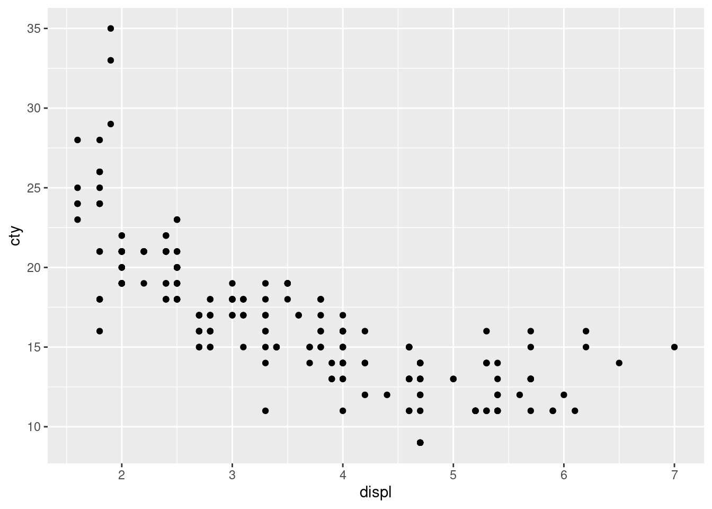

plt <- ggplot2::ggplot(ggplot2::mpg, ggplot2::aes(displ, cty)) +
ggplot2::geom_point()
plt
November 26, 2020
Testing quarto / Rmarkdown features.
R Core Team (2020)
Example from the mathjax demo:
When \(a \ne 0\), there are two solutions to \(ax^2 + bx + c = 0\) and they are
\[x = {-b \pm \sqrt{b^2-4ac} \over 2a}.\]
If I have a random $ and another $ in my text.
w and s move the left paddle, o and l move the right paddle.
[1] "test"plt <- ggplot2::ggplot(ggplot2::mpg, ggplot2::aes(displ, cty)) +
ggplot2::geom_point()
plotly::ggplotly(plt)However, while this options brings back plotly, it also disables math rendering for this document on the site.
\[sd = \sqrt{\frac{\sum_{i=0}^{n}{(x_i-\bar x)^2}}{(n-1)} }\]
graph TB A-->B A-->C C-->E B-->D C-->D D-->F E-->F